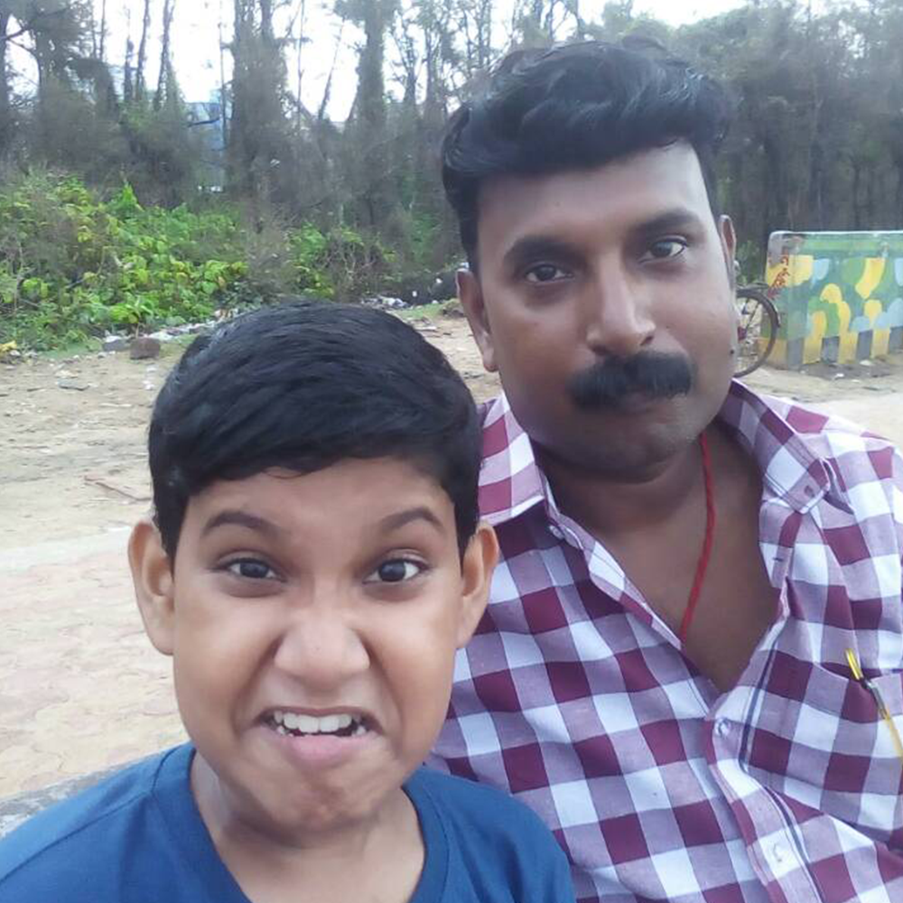
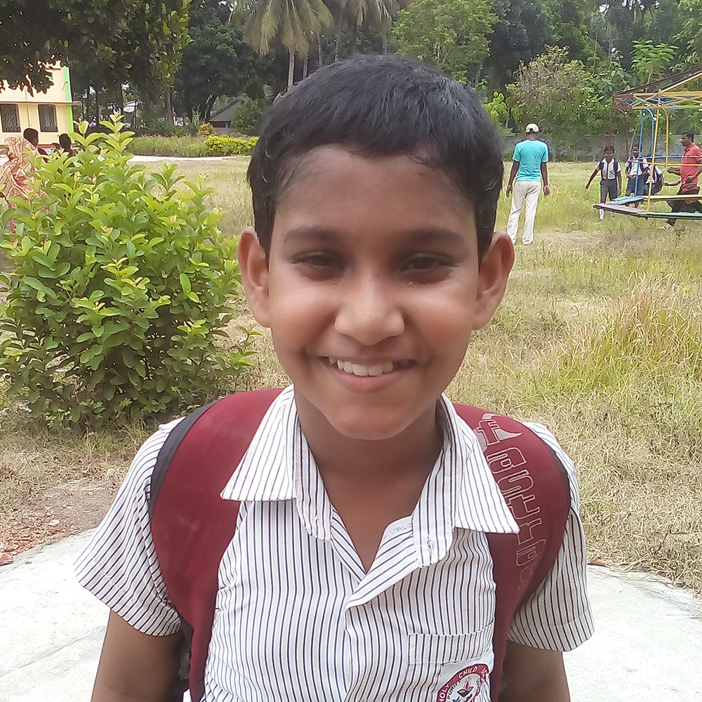
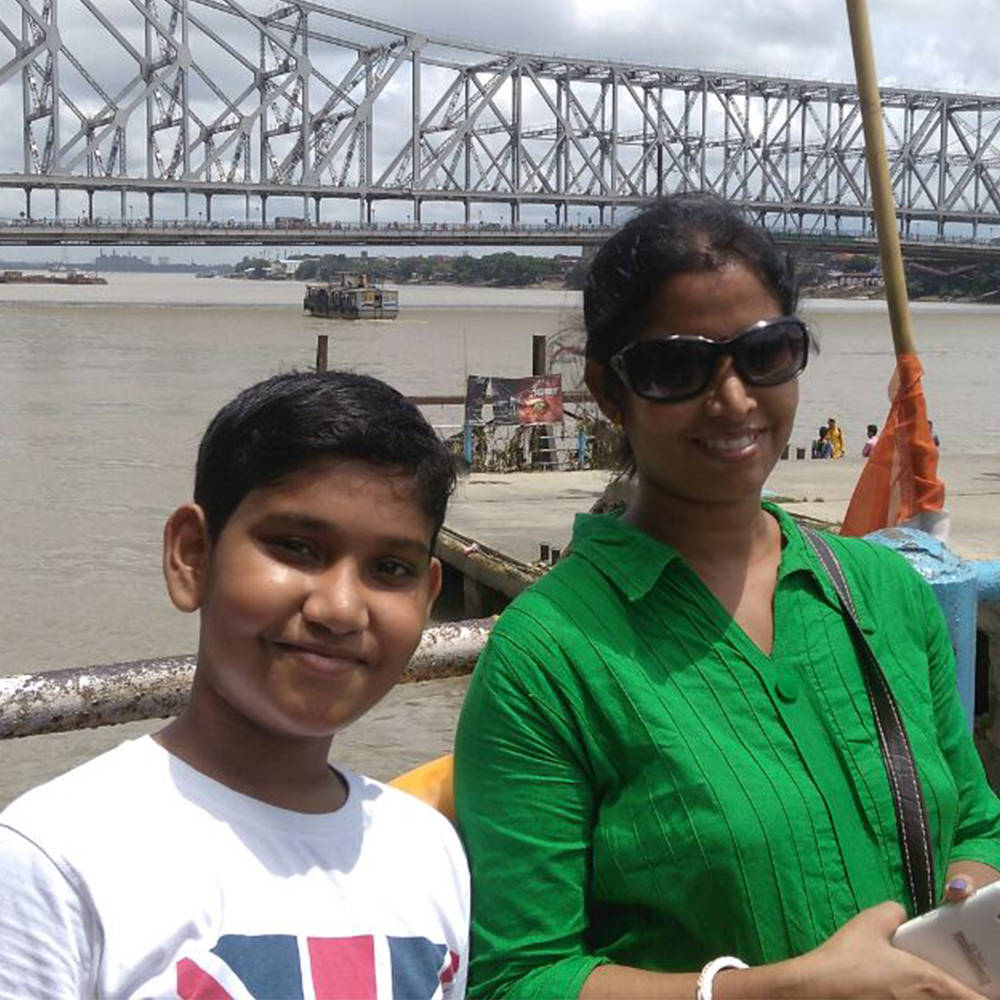
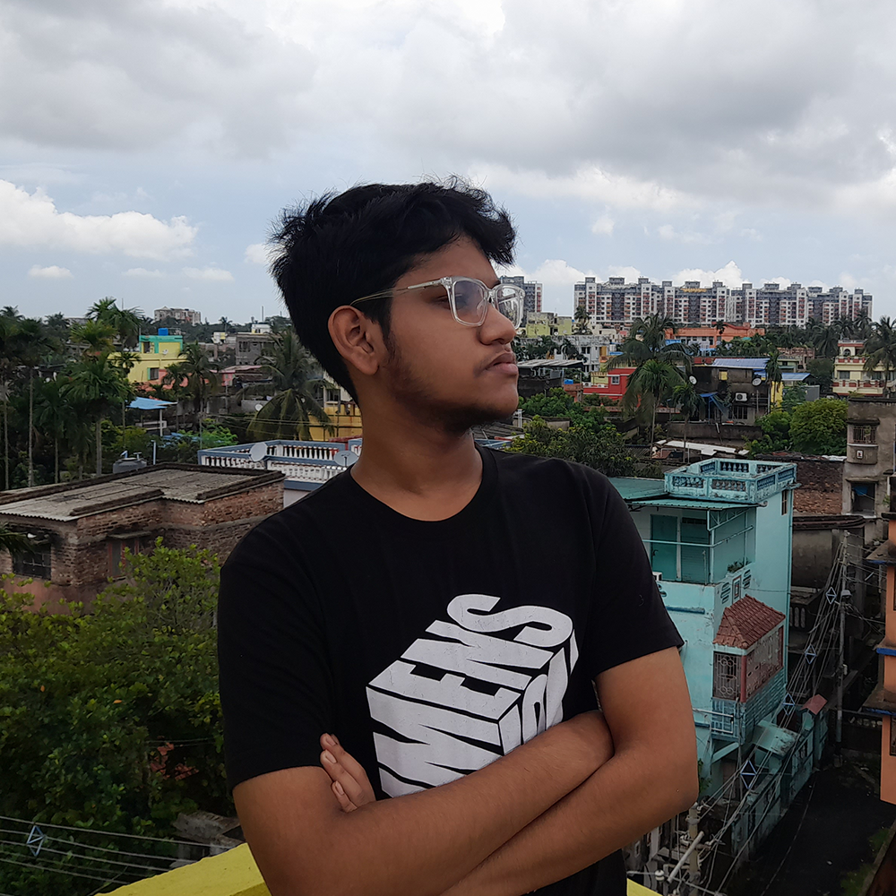
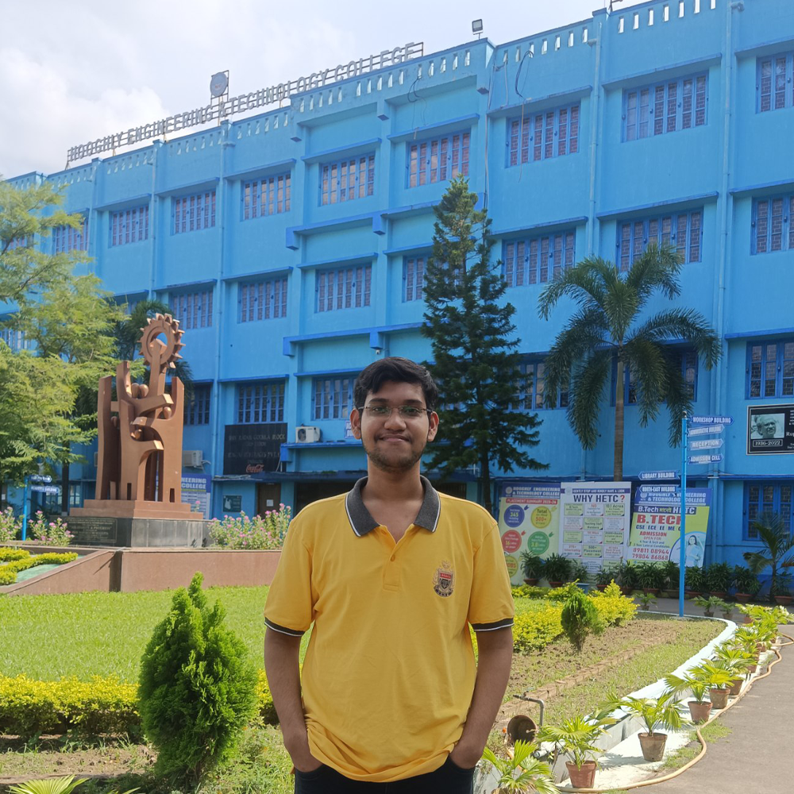
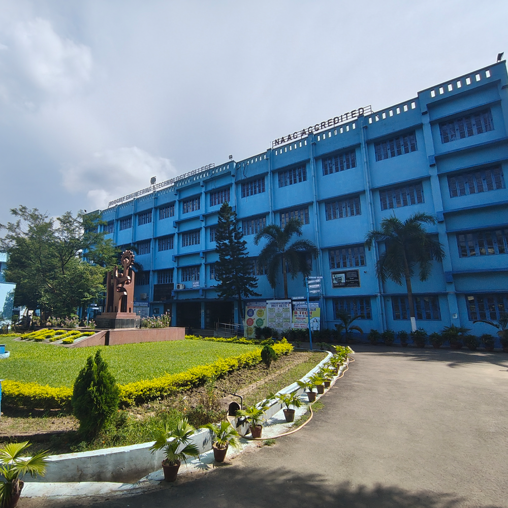
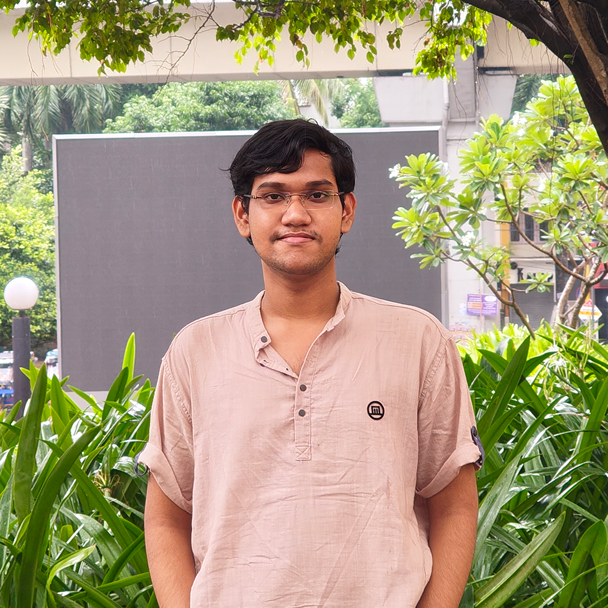

I’m Ratnadwip Sarkar, born and raised in Ranaghat, West Bengal. My journey into creativity and technology began long before I even realized it—back in the early days of sketchbooks and school science fairs.

I studied at Holy Child School during my formative years, and later moved to Ranaghat PC High (HS) School. It was during this time that I grew fond of both logic and aesthetics—whether it was through physics experiments or editing random videos for fun.


Around the end of high school, I found myself increasingly drawn to the intersection of technology and creativity. What began as casual tinkering soon evolved into a serious pursuit of visual storytelling, audio work, and digital experimentation. I gradually built skills in areas like content creation, live streaming, and even networking—blending logic with intuition to solve problems and bring ideas to life.

I’m currently pursuing Computer Science and Engineering at Hooghly Engineering and Technology College [HETC]. My journey is just beginning—but I’m already excited to combine my technical foundation with my background in design and audio-related projects. Whether it’s experimenting with side projects or collaborating with peers, I aim to bridge creativity with technology as I step into this new academic phase.


My goal is to keep building, learning, and telling stories—whether that’s through code, sound, visuals, or all three. I believe that creativity and logic aren't opposites—they’re partners. And I want to keep blending them to create things that matter.
